CODING AGENTS AS PIXEL WORLD MODELS
traex/DeepSeek-V4.1-Flash · 0070
点击播放 · 原生 RGB 像素
逐轮保存的候选
回放视频、检查图与代码变化。
每份候选均可单独播放。实际图片检查记录在下方工具轨迹中。
候选 01播放与检查图
点击播放 · 原生 RGB 像素

展开代码变化
--- 上一保存版本
+++ 本次保存版本
@@ -0,0 +1,179 @@
+from pathlib import Path
+
+import cv2
+import numpy as np
+from PIL import Image
+
+import artifact_io
+
+
+CASE_DIR = Path(__file__).resolve().parent
+WIDTH, HEIGHT = 256, 144
+FRAMES, FPS = 20, 4
+SS = 4
+
+
+def smoothstep(x):
+ x = np.clip(x, 0.0, 1.0)
+ return x * x * (3.0 - 2.0 * x)
+
+
+def high_res_rgb(array):
+ return cv2.resize(
+ array, (WIDTH * SS, HEIGHT * SS), interpolation=cv2.INTER_CUBIC
+ )
+
+
+def glass_half_width(y):
+ """Interior width of the stemmed glass, in source-image pixels."""
+ knots_y = np.array([63, 70, 82, 96, 108, 118, 124, 128], np.float32)
+ left = np.array([150.0, 148.0, 146.0, 145.5, 146.0, 149.0, 154.0, 160.0])
+ right = np.array([198.0, 196.5, 194.5, 192.0, 189.0, 185.0, 180.0, 176.0])
+ return (
+ np.interp(y, knots_y, left),
+ np.interp(y, knots_y, right),
+ )
+
+
+def liquid_overlay(level):
+ """Warm liquid with a curved surface, built at 4x for clean edges."""
+ yy, xx = np.mgrid[0 : HEIGHT * SS, 0 : WIDTH * SS]
+ x = (xx + 0.5) / SS - 0.5
+ y = (yy + 0.5) / SS - 0.5
+
+ left, right = glass_half_width(y)
+ cx = (left + right) * 0.5
+ rx = np.maximum((right - left) * 0.5, 1.0)
+ surface = level + 1.1 * (1.0 - np.clip((x - cx) / rx, -1.0, 1.0) ** 2)
+
+ inside = (
+ (y >= 62.0)
+ & (y <= 125.5)
+ & (x >= left + 0.7)
+ & (x <= right - 0.7)
+ )
+ liquid_depth = y - surface
+ body = inside & (liquid_depth >= -0.35)
+
+ # The top of the liquid is brighter from skylight; the body darkens
+ # slightly as it descends into the bowl.
+ depth_fade = np.clip((liquid_depth - 1.0) / 30.0, 0.0, 1.0)
+ top = np.array([213.0, 139.0, 88.0], np.float32)
+ deep = np.array([151.0, 77.0, 39.0], np.float32)
+ color = top[None, None, :] * (1.0 - depth_fade[..., None])
+ color += deep[None, None, :] * depth_fade[..., None]
+
+ edge_alpha = np.clip((liquid_depth + 0.65) / 1.6, 0.0, 1.0)
+ alpha = edge_alpha * (0.61 + 0.12 * depth_fade)
+ alpha *= inside.astype(np.float32)
+
+ # A narrow meniscus highlight makes the rising edge read as a liquid
+ # surface rather than a flat color wash.
+ meniscus = np.exp(-((liquid_depth + 0.1) / 0.72) ** 2)
+ highlight = np.array([236.0, 174.0, 124.0], np.float32)
+ color = color * (1.0 - 0.45 * meniscus[..., None])
+ color += highlight * (0.45 * meniscus[..., None])
+ alpha = np.maximum(alpha, 0.33 * meniscus * inside)
+
+ return color, alpha
+
+
+def stream_overlay(level, frame_index):
+ """A fine, gravity-stretched stream from the spigot to the meniscus."""
+ yy, xx = np.mgrid[0 : HEIGHT * SS, 0 : WIDTH * SS]
+ x = (xx + 0.5) / SS - 0.5
+ y = (yy + 0.5) / SS - 0.5
+
+ top = 76.2
+ impact = float(np.clip(level + 0.1, 77.0, 91.0))
+ span = max(impact - top, 0.4)
+ center = 156.6 + 0.43 * (y - top) + 0.10 * np.sin(
+ 2.1 * (y - top) + 0.35 * frame_index
+ )
+ width = 1.30 + 0.26 * (y - top) / span
+ d = np.abs(x - center)
+
+ along = np.clip((y - top) / span, 0.0, 1.0)
+ in_stream = (
+ (y >= top)
+ & (y <= impact + 0.55)
+ & (d <= width)
+ & (along <= 1.0)
+ )
+ soft = np.clip((width - d) / 0.85, 0.0, 1.0)
+ end_fade = np.clip((impact + 0.55 - y) / 0.75, 0.0, 1.0)
+ alpha = 0.76 * soft * end_fade * in_stream
+
+ # Vertical highlights travel down the stream. They are deliberately
+ # subtle at this resolution, where excessive texture would look noisy.
+ phase = 7.4 * y - 0.72 * frame_index
+ ripple = 0.5 + 0.5 * np.sin(phase)
+ core = np.array([202.0, 121.0, 65.0], np.float32)
+ shine = np.array([246.0, 222.0, 198.0], np.float32)
+ left_shine = np.exp(-((x - (center - 0.52)) / 0.55) ** 2)
+ color = core[None, None, :] + shine[None, None, :] * (
+ 0.52 * left_shine[..., None] * (0.72 + 0.28 * ripple[..., None])
+ )
+ color = np.clip(color, 0.0, 255.0)
+ return color, alpha
+
+
+def splash_overlay(level, frame_index):
+ """Compact impact dimple and two decaying concentric surface rings."""
+ yy, xx = np.mgrid[0 : HEIGHT * SS, 0 : WIDTH * SS]
+ x = (xx + 0.5) / SS - 0.5
+ y = (yy + 0.5) / SS - 0.5
+ cx, cy = 163.0, float(np.clip(level + 0.2, 78.0, 91.0))
+
+ dx = (x - cx) / 5.8
+ dy = (y - cy) / 1.25
+ radius = np.sqrt(dx * dx + dy * dy)
+ ring_phase = (frame_index % 4) / 4.0
+ ring = np.exp(-((radius - (0.45 + 0.85 * ring_phase)) / 0.20) ** 2)
+ dimple = np.exp(-(dx * dx + (dy / 0.75) ** 2) * 1.8)
+ alpha = 0.28 * ring + 0.24 * dimple
+ color = np.zeros((*alpha.shape, 3), np.float32)
+ color[:] = np.array([244.0, 181.0, 129.0], np.float32)
+ return color, np.clip(alpha, 0.0, 0.38)
+
+
+def composite(base, color, alpha):
+ overlay = cv2.resize(
+ color, (WIDTH, HEIGHT), interpolation=cv2.INTER_AREA
+ )
+ mask = cv2.resize(
+ alpha, (WIDTH, HEIGHT), interpolation=cv2.INTER_AREA
+ )[..., None]
+ return np.clip(base.astype(np.float32) * (1.0 - mask) + overlay * mask, 0, 255)
+
+
+def main():
+ base = np.asarray(Image.open(CASE_DIR / "first_frame.png").convert("RGB"))
+ frames = []
+
+ for i in range(FRAMES):
+ if i == 0:
+ frames.append(base.copy())
+ continue
+
+ progress = i / (FRAMES - 1)
+ # Constant outflow keeps the rise linear under the fixed camera.
+ level = 91.0 - 11.8 * progress
+ frame = base.copy()
+
+ color, alpha = liquid_overlay(level)
+ frame = composite(frame, color, alpha)
+
+ color, alpha = stream_overlay(level, i)
+ frame = composite(frame, color, alpha)
+
+ color, alpha = splash_overlay(level, i)
+ frame = composite(frame, color, alpha)
+
+ frames.append(np.clip(frame, 0, 255).astype(np.uint8))
+
+ artifact_io.save(np.asarray(frames), CASE_DIR)
+
+
+if __name__ == "__main__":
+ main()
可观测工具轨迹
实际执行的命令与返回图片。
命令 1exit 0
/bin/bash -c "pwd && rg --files -g '"'!*node_modules*'"' -g '"'!*.git*'"' | sed -n '1,160p'"
命令 2exit 0
/bin/bash -c 'cat prompt.txt'
命令 3exit 0
/bin/bash -c 'cat GENERATION_RULES.md'
命令 4exit 0
/bin/bash -c "ls -la && find . -maxdepth 2 -type f -printf '%p %s bytes\\n' | sort"
命令 5exit 0
/bin/bash -c "sed -n '1,240p' artifact_io.py"
命令 6exit 0
/bin/bash -c "sed -n '1,240p' player_template.html"
命令 7exit 127
/bin/bash -c "file first_frame.png && python - <<'PY'
from PIL import Image
im=Image.open('first_frame.png')
print(im.size, im.mode)
PY"命令 8exit 0
/bin/bash -c "python - <<'PY'
from PIL import Image
im=Image.open('first_frame.png')
print(im.size, im.mode)
PY"命令 9exit 0
/bin/bash -c "python - <<'PY'
from PIL import Image
im=Image.open('first_frame.png')
im.crop((130,15,205,110)).resize((450,570),Image.Resampling.NEAREST).save('.tmp/spigot_crop.png')
im.crop((135,55,210,143)).resize((450,528),Image.Resampling.NEAREST).save('.tmp/glass_crop.png')
im.crop((0,35,150,135)).resize((600,400),Image.Resampling.NEAREST).save('.tmp/dispenser_crop.png')
PY"命令 10exit 0
/bin/bash -c "python - <<'PY'
from PIL import Image
import numpy as np
im=np.array(Image.open('first_frame.png'))
pts=[(175,110),(180,120),(165,100),(190,110),(175,90),(175,85),(180,70),(172,63),(160,60),(190,60),(150,100),(200,100)]
for x,y in pts: print((x,y),im[y,x])
# row segments of orange-ish color
for y in range(50,140,5):
row=im[y]
mask=(row[:,0]>150)&(row[:,0]>row[:,1]+25)&(row[:,1]>80)
xs=np.flatnonzero(mask)
if len(xs): print('y',y,'orange',xs.min(),xs.max(),len(xs))
PY"命令 11exit 0
/bin/bash -c "python - <<'PY' mods=['numpy','PIL','scipy','cv2','skimage'] for m in mods: try: x=__import__(m); print(m,getattr(x,'__version__','ok')) except Exception as e: print(m,'MISSING',e) PY"
命令 12exit 0
/bin/bash -c "python - <<'PY'
from PIL import Image
import numpy as np
im=np.array(Image.open('first_frame.png'))
# print rough gradients of orange region rows x 140:205
for y in range(55,141,2):
vals=[]
for x in range(140,206,4): vals.append('%02x%02x%02x'%tuple(im[y,x]))
print(f'{y:3}', ' '.join(vals))
PY"命令 13exit 0
/bin/bash -c "python - <<'PY'
from PIL import Image
im=Image.open('first_frame.png')
im.crop((138,55,205,144)).resize((536,712),Image.Resampling.NEAREST).save('.tmp/glass_big.png')
im.crop((140,55,185,115)).resize((360,480),Image.Resampling.NEAREST).save('.tmp/stream_big.png')
PY"命令 14exit 0
/bin/bash -c "python - <<'PY'
from PIL import Image
import numpy as np
im=np.array(Image.open('first_frame.png'))
for y in range(65,115,2):
s=''
for x in range(145,200):
r,g,b=im[y,x]
if r<50 and g<45 and b<40:c='#'
elif r>120 and r>g*1.25 and g>55:c='O'
elif r>r*0+130 and g>90 and b<100 and r>g*1.1:c='o'
elif r>170 and g>150 and b>140:c='.'
elif b>r*1.2:c='b'
elif r+g+b<170:c='d'
else:c=' '
s+=c
print(f'{y:3} {s}')
PY"命令 15exit 0
/bin/bash -c "python - <<'PY'
from PIL import Image
import numpy as np
im=np.array(Image.open('first_frame.png')).astype(float)
# pixel output size perhaps original is downsampled from 512x288? upscale and inspect
Image.fromarray(im.astype('uint8')).resize((1024,576),Image.Resampling.LANCZOS).save('.tmp/full_upscale.png')
# edge map
import cv2
g=cv2.cvtColor(im.astype('uint8'),cv2.COLOR_RGB2GRAY)
e=cv2.Canny(g,30,80)
Image.fromarray(e).resize((1024,576),Image.Resampling.NEAREST).save('.tmp/edges.png')
PY"命令 16exit 0
/bin/bash -c "python - <<'PY'
from PIL import Image
import numpy as np
im=np.array(Image.open('first_frame.png'))
# rows left/right transparent boundaries from color/edge manually likely glass x 146..203 y58..143
# color segmentation based local gradients
for y in range(60,144,4):
gx=np.abs(np.diff(im[y].astype(int),axis=0)).sum(1)
print(y, [(int(x),int(gx[x])) for x in np.argsort(gx[130:215])[-8:]+130][::-1])
PY"命令 17exit 0
/bin/bash -c "python - <<'PY'
from PIL import Image
import numpy as np
im=np.array(Image.open('first_frame.png'))
# print color and luminance x 150..180 y 78..112
for y in range(78,113):
s=''
for x in range(150,181):
r,g,b=im[y,x]
if max(r,g,b)<55:c='#'
elif r>g+25 and r>b+40 and r>110:c='O'
elif r>g+15 and g>b+5 and r>90:c='o'
elif max(r,g,b)<100:c='d'
elif min(r,g,b)>175:c='.'
else:c=' '
s+=c
print(f'{y:3} {s}')
PY"命令 18exit 0
/bin/bash -c "python - <<'PY'
from PIL import Image
im=Image.open('first_frame.png')
# target original at 8x with guide grid maybe
im.crop((140,55,210,144)).resize((560,712),Image.Resampling.LANCZOS).save('.tmp/glass_lanczos.png')
PY"命令 19exit 0
/bin/bash -c "python - <<'PY'
from PIL import Image
import numpy as np
im=np.array(Image.open('first_frame.png'))
# sample stream exact pixels in tight columns x151-170 y 77-91
for y in range(74,94):
print(f'{y:3}', ' '.join('%02x%02x%02x'%tuple(im[y,x]) for x in range(148,175)))
PY"命令 20exit 0
/bin/bash -c "python - <<'PY'
from PIL import Image,ImageDraw,ImageFont
im=Image.open('first_frame.png').crop((130,50,215,144)).resize((680,752),Image.Resampling.NEAREST)
d=ImageDraw.Draw(im)
for x in range(130,216,5):
xx=(x-130)*8
d.line((xx,0,xx,752),fill=(255,0,255),width=1)
d.text((xx+1,1),str(x),fill=(255,255,0))
for y in range(50,145,5):
yy=(y-50)*8
d.line((0,yy,680,yy),fill=(0,255,255),width=1)
d.text((1,yy+1),str(y),fill=(255,255,0))
im.save('.tmp/glass_grid.png')
PY"命令 21exit 0
/bin/bash -c "python - <<'PY'
from PIL import Image,ImageDraw
im=Image.open('first_frame.png').resize((1024,576),Image.Resampling.NEAREST)
d=ImageDraw.Draw(im)
for x in range(0,256,10):
xx=x*4; d.line((xx,0,xx,576),fill=(255,0,255),width=1); d.text((xx+1,1),str(x),fill=(255,255,0))
for y in range(0,144,10):
yy=y*4; d.line((0,yy,1024,yy),fill=(0,255,255),width=1); d.text((1,yy+1),str(y),fill=(255,255,0))
im.save('.tmp/full_grid.png')
PY"命令 22exit 0
/bin/bash -c 'python generate.py'
命令 23exit 0
/bin/bash -c "python - <<'PY'
from PIL import Image
import numpy as np
base=np.array(Image.open('first_frame.png'))
f=np.array(Image.open('frames/19.png'))
Image.fromarray(f).resize((1024,576),Image.Resampling.NEAREST).save('.tmp/final_nearest.png')
Image.fromarray(f).resize((1024,576),Image.Resampling.LANCZOS).save('.tmp/final_lanczos.png')
print('frame0 identical', np.array_equal(base,np.array(Image.open('frames/00.png'))))
# differences per frame
for i in range(20):
a=np.array(Image.open(f'frames/{i:02d}.png')).astype(int)
print(i, int(np.abs(a-base).sum()), int((a"'!=base).any(2).sum()))
PY'命令 24exit 0
/bin/bash -c "python - <<'PY'
from PIL import Image
import numpy as np
b=np.array(Image.open('first_frame.png'))
f=np.array(Image.open('frames/19.png'))
# crop baseline and final side by side 8x
crop=(138,58,206,144)
a=Image.open('first_frame.png').crop(crop).resize((544,688),Image.Resampling.LANCZOS)
z=Image.open('frames/19.png').crop(crop).resize((544,688),Image.Resampling.LANCZOS)
out=Image.new('RGB',(1088,688));out.paste(a,(0,0));out.paste(z,(544,0));out.save('.tmp/before_after.png')
PY"命令 25exit 0
/bin/bash -c "python - <<'PY'
from PIL import Image
import numpy as np
for i in [0,1,5,10,15,19]:
im=Image.open(f'frames/{i:02d}.png').crop((138,55,206,144)).resize((340,445),Image.Resampling.LANCZOS)
im.save(f'.tmp/f{i:02d}.png')
PY"命令 26exit 0
/bin/bash -c "python - <<'PY'
import numpy as np
from PIL import Image
b=np.array(Image.open('first_frame.png')).astype(float)
for i in [1,5,10,15,19]:
f=np.array(Image.open(f'frames/{i:02d}.png')).astype(float)
d=np.abs(f-b).mean(2)
ys,xs=np.where(d>2)
print(i,'diff bounds',xs.min(),xs.max(),ys.min(),ys.max(),'mean',d[ys,xs].mean(),'max',d.max())
PY"命令 27exit 0
/bin/bash -c "python - <<'PY'
import cv2, numpy as np
from PIL import Image
b=np.array(Image.open('first_frame.png'))
f=np.array(Image.open('frames/19.png'))
d=np.abs(f.astype(int)-b.astype(int)).max(2)
# heatmap only diff
h=np.zeros_like(f);h[:,:,0]=np.clip(d*4,0,255)
Image.fromarray(h).resize((1024,576),Image.Resampling.NEAREST).save('.tmp/diff19.png')
PY"命令 28exit 0
/bin/bash -c "python - <<'PY'
from PIL import Image
import numpy as np
b=np.array(Image.open('first_frame.png')).astype(float)
for i in [1,5,10,15,19]:
f=np.array(Image.open(f'frames/{i:02d}.png')).astype(float)
d=np.abs(f-b).mean(2)
# every row significant diff range, x 140..205
print('\\nFRAME',i)
for y in range(74,128,2):
xs=np.where(d[y,138:205]>4)[0]+138
if len(xs): print(y, xs.min(), xs.max(), round(d[y,xs].mean(),1))
PY"命令 29exit 0
/bin/bash -c "python - <<'PY'
from PIL import Image
import numpy as np
for i in [0,1,5,10,15,19]:
im=Image.open(f'frames/{i:02d}.png').crop((142,74,196,128)).resize((540,540),Image.Resampling.LANCZOS)
im.save(f'.tmp/surface_{i:02d}.png')
PY"命令 30exit 0
/bin/bash -c 'ls -lh generate.py first_frame.png frames pixels.npz index.html inspection.png transition_check.png && wc -c index.html'
命令 31exit 0
/bin/bash -c "python - <<'PY'
from pathlib import Path
import numpy as np
from PIL import Image
frames=np.stack([np.asarray(Image.open(f'frames/{i:02d}.png')) for i in range(20)])
base=np.asarray(Image.open('first_frame.png'))
print('frames', frames.shape, frames.dtype)
print('first_exact', np.array_equal(frames[0], base))
print('range', int(frames.min()), int(frames.max()))
print('consecutive_mean_abs', [round(float(np.abs(frames[i].astype(float)-frames[i-1].astype(float)).mean()),3) for i in range(1,20)])
with np.load('pixels.npz') as z:
p=z['pixels']
print('pixels.npz', p.shape, p.dtype, int(p.min()), int(p.max()))
# Decode packed first frame and compare
packed=p[:,:,0].astype(np.uint32)
dec=np.stack([(packed>>16)&255,(packed>>8)&255,packed&255],axis=2).astype(np.uint8)
print('npz_first_exact', np.array_equal(dec, base))
PY"命令 32exit 0
/bin/bash -c 'python -m py_compile generate.py artifact_io.py'
命令 33exit 0
/bin/bash -c "python - <<'PY'
from PIL import Image
import numpy as np
b=np.array(Image.open('first_frame.png')).astype(float)
for i in range(1,20):
f=np.array(Image.open(f'frames/{i:02d}.png')).astype(float)
d=np.abs(f-b).mean(2)
ys,xs=np.where(d>3)
print(i, 'bbox', (xs.min(),ys.min(),xs.max(),ys.max()), 'changed', len(xs), 'mean', round(float(d[ys,xs].mean()),2))
PY"命令 34exit 0
/bin/bash -c "python - <<'PY'
from PIL import Image
import numpy as np
# Build 5x4 contact sheet with frame labels at 2x, just to assess motion and artifacts.
frames=[Image.open(f'frames/{i:02d}.png') for i in range(20)]
from PIL import ImageDraw
out=Image.new('RGB',(256*5, (144+16)*4),(25,28,35));d=ImageDraw.Draw(out)
for i,im in enumerate(frames):
x=(i%5)*256;y=(i//5)*(160)
out.paste(im,(x,y+16));d.text((x+4,y+2),f'{i:02d} {i*0.25:.2f}s',fill=(255,255,255))
out.resize((1280*2,640*2),Image.Resampling.NEAREST).save('.tmp/contact.png')
PY"命令 35exit 0
/bin/bash -c "python - <<'PY'
from PIL import Image
import numpy as np
# quantify temporal instability inside untouched static regions
a=np.stack([np.array(Image.open(f'frames/{i:02d}.png')).astype(int) for i in range(20)])
static=np.ones((144,256),bool); static[70:130,140:200]=False
t=np.abs(np.diff(a,axis=0)).mean(axis=(0,3))
print('static temporal max',float(t[static].max()),'mean',float(t[static].mean()))
print('animated temporal mean',float(t[~static].mean()))
PY"命令 36exit 0
/bin/bash -c "python - <<'PY'
from PIL import Image
import numpy as np
b=np.array(Image.open('first_frame.png')).astype(float)
f=np.array(Image.open('frames/19.png')).astype(float)
d=np.abs(f-b).mean(2)
for y in [77,78,79,80,81,82,83,84,90,91,92,93,94,95,100,110,120,125]:
xs=np.where(d[y]>3)[0]
print(y, (int(xs.min()),int(xs.max()),len(xs)) if len(xs) else None)
PY"命令 37exit 0
/bin/bash -c "python - <<'PY'
from PIL import Image
import numpy as np
b=np.array(Image.open('first_frame.png')).astype(float)
f=np.array(Image.open('frames/19.png')).astype(float)
d=np.abs(f-b).mean(2)
# text exact rows to see alpha shape
for y in range(77,96):
xs=np.where(d[y]>3)[0]
print(y, (xs.min(),xs.max()) if len(xs) else None)
PY"命令 38exit 0
/bin/bash -c "python - <<'PY'
from PIL import Image
import numpy as np
b=np.array(Image.open('first_frame.png')).astype(int)
f=np.array(Image.open('frames/19.png')).astype(int)
d=np.abs(f-b).mean(2)
for y in [79,80,81,82,83,84,85,86,87,88,89,90,91,92,93,94,95,100,110,120]:
print(y, ''.join('X' if v>8 else '+' if v>3 else '.' for v in d[y,142:198]))
PY"视觉工具实际返回图片 1

视觉工具实际返回图片 2
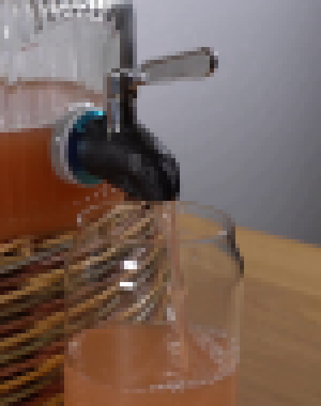
视觉工具实际返回图片 3

视觉工具实际返回图片 4
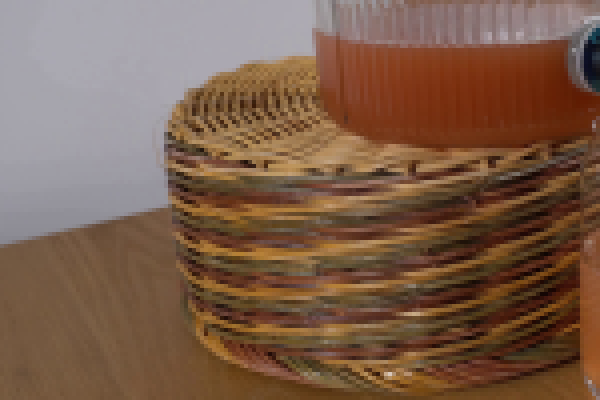
视觉工具实际返回图片 5
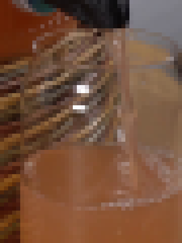
视觉工具实际返回图片 6
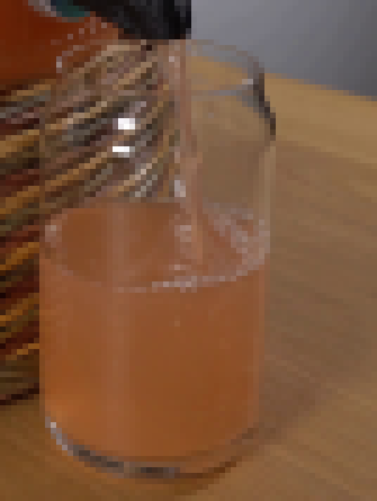
视觉工具实际返回图片 7
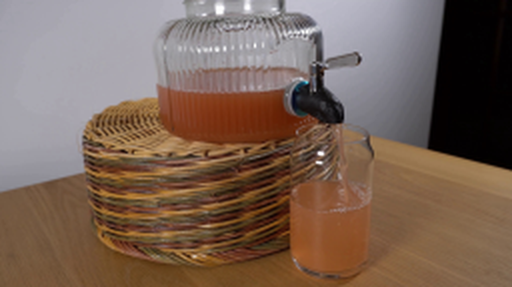
视觉工具实际返回图片 8
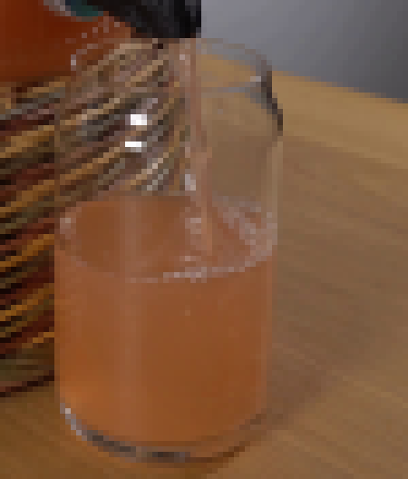
视觉工具实际返回图片 9
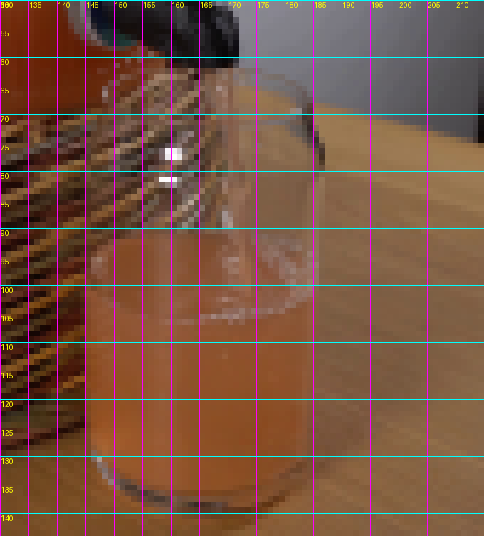
视觉工具实际返回图片 10
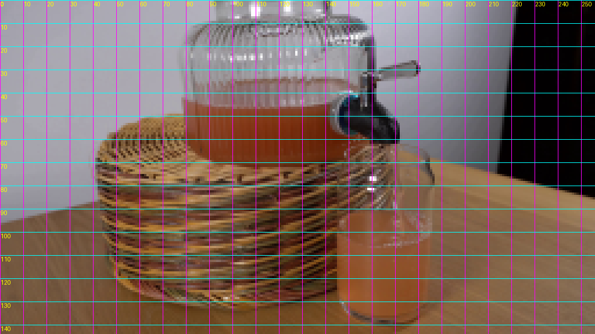
视觉工具实际返回图片 11
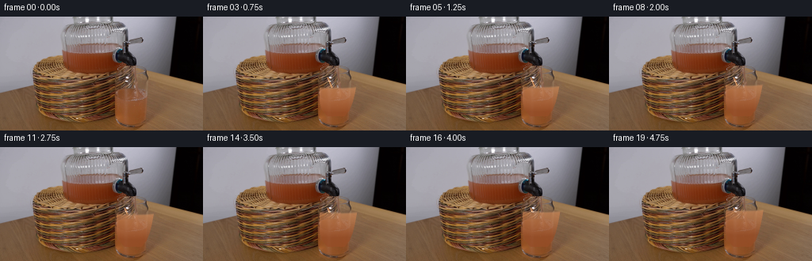
视觉工具实际返回图片 12
视觉工具实际返回图片 13
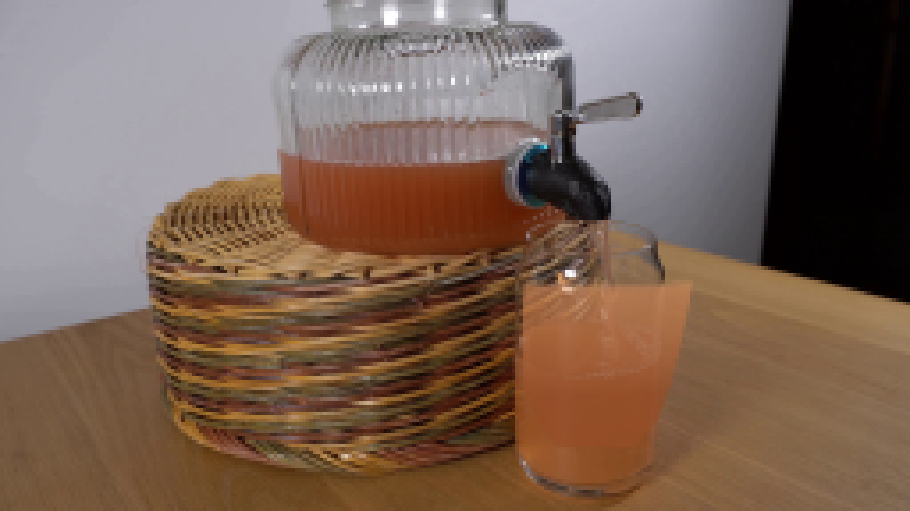
视觉工具实际返回图片 14
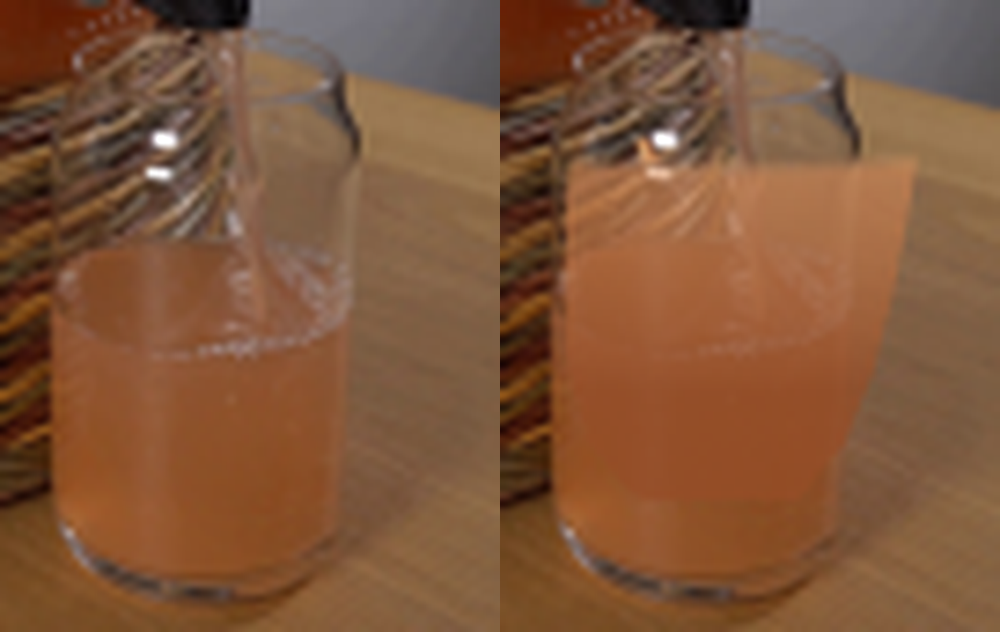
视觉工具实际返回图片 15
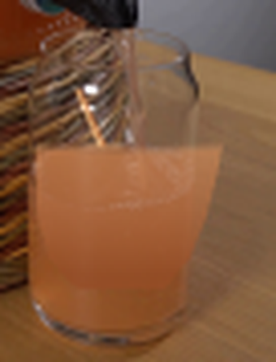
视觉工具实际返回图片 16
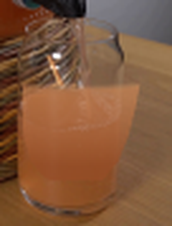
视觉工具实际返回图片 17
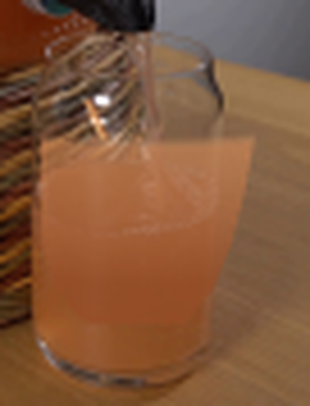
视觉工具实际返回图片 18
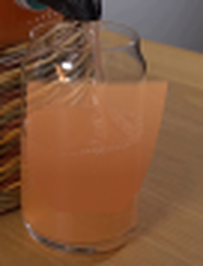
视觉工具实际返回图片 19
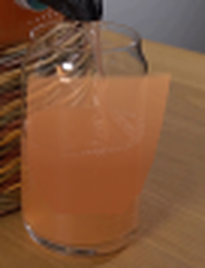
视觉工具实际返回图片 20
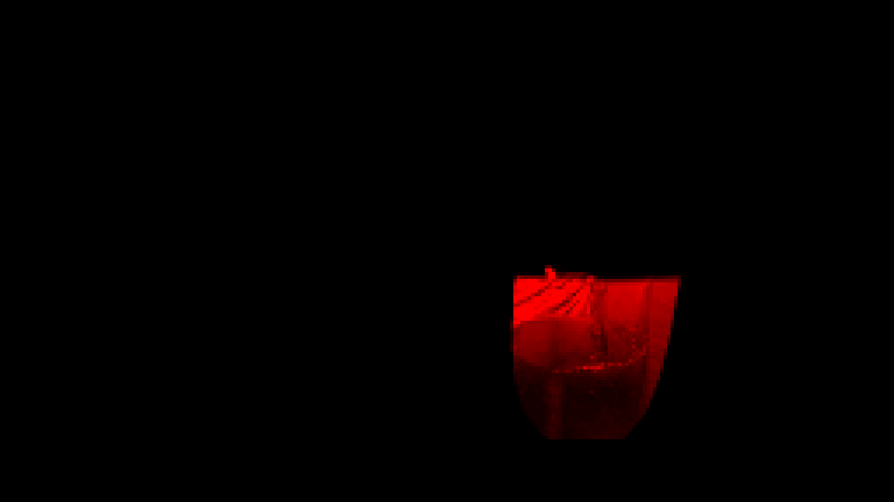
视觉工具实际返回图片 21
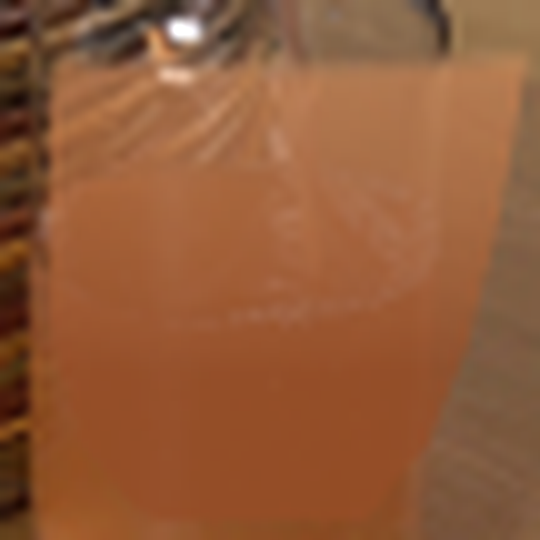
视觉工具实际返回图片 22
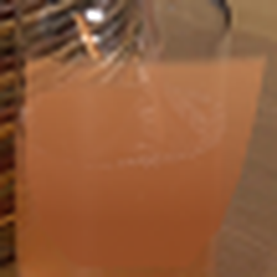
视觉工具实际返回图片 23
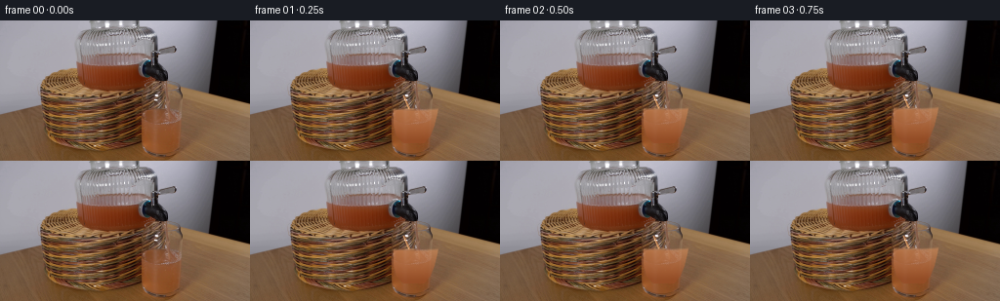
视觉工具实际返回图片 24
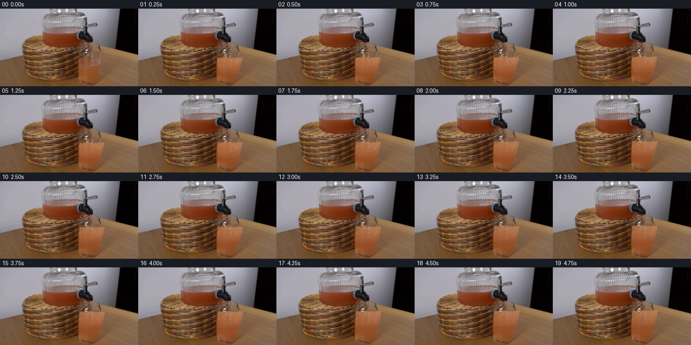
保存候选 1 份；完成命令 38 次；可验证图片返回 24 张。原始 API 响应与完整日志保留在本地。